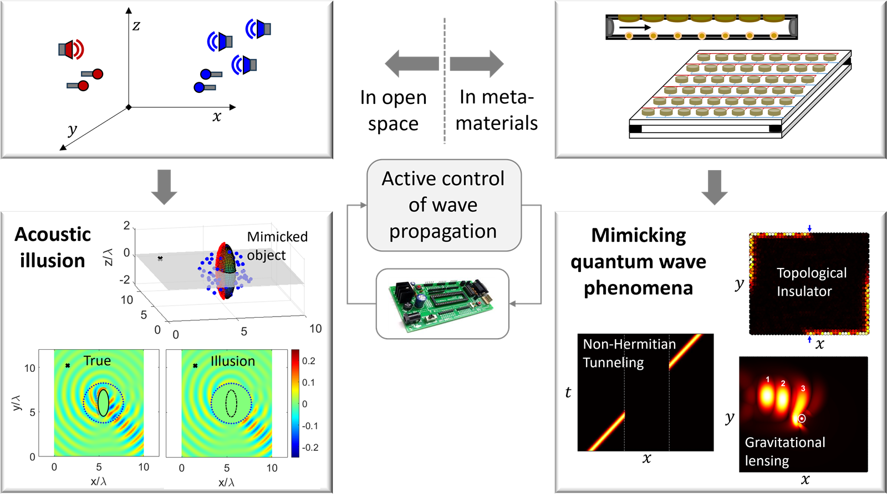

We are interested in the active control of wave propagation in both engineered media and open environments. Our research spans acoustic, elastic, and electric-circuit metamaterials, as well as free-space acoustic systems. In metamaterials, we design actively controlled architectures that emulate quantum-mechanical wave phenomena—including topological effects, tunneling, and non-Hermitian physics—to enable autonomous and reprogrammable waveguiding. In open acoustic domains, we develop methods for active acoustic illusions and field shaping, allowing sound to behave as though it interacts with virtual structures. Our work combines control theory, acoustics, vibrations, condensed matter physics, and electronics. Read More.

JOIN US!
Latest News
- 26.08.2026Congratulations to Sayan on the acceptance of his paper to Physical Review Applied!
- 23.08.2026Congratulations to Sayan on being promoted to a Research Scientist!
- 20-24.07.2026We present our work at the METAMAT 2026 conference on Corsica.
- 07.07.2026Gal presents his final year project. Congratulations, Gal!
- 07.06.2026Dr. Bhargav Pavan Kumar Sistla joins our lab. Welcome Bhargav!
- 23.04.2026We were awarded the continuation grant of the Israel Innovation Authority.